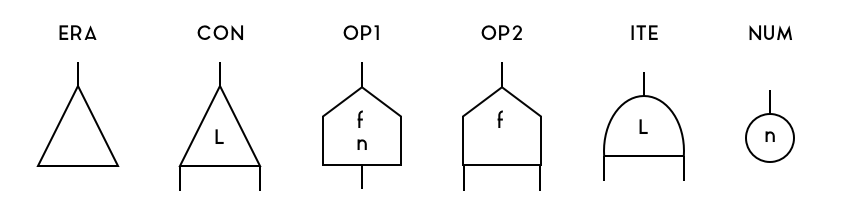
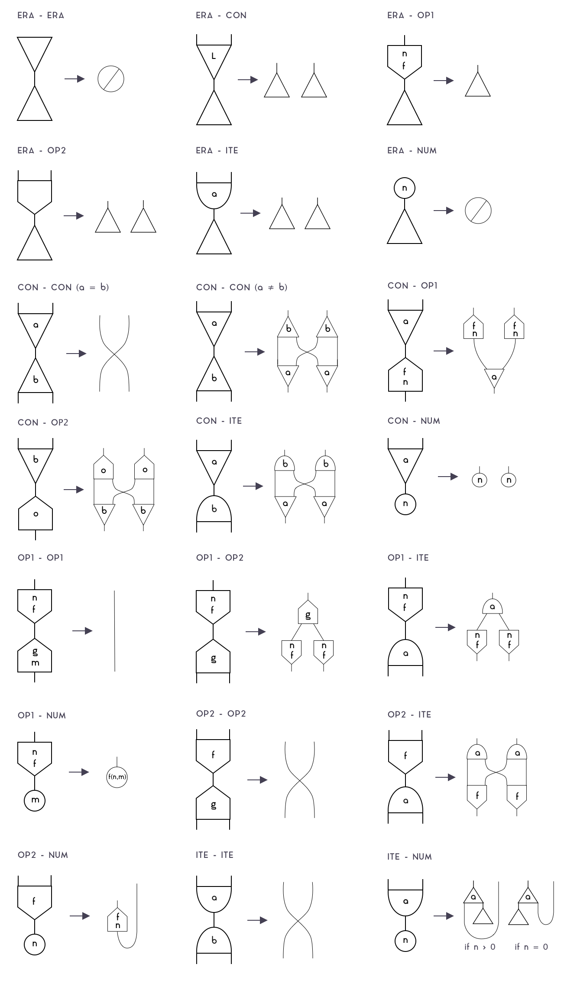
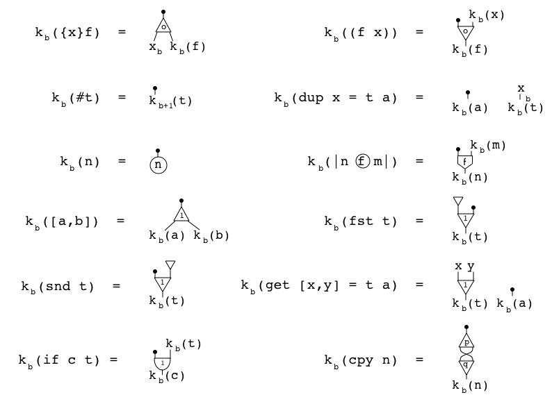

1. Formality Net¶
Formality terms are compiled to a memory-efficient interaction net system. Interaction nets are just graphs where nodes have labelled ports, one being the main one, plus a list of “rewrite rules” that are activated whenever two nodes are connected by their main ports. Our system includes 6 types of nodes, ERA, CON, OP1, OP2, ITE, NUM.

CONhas 3 ports and an integer label. It is used to represent lambdas, applications, boxes (implicitly) and duplications. Since FM-Core is based on EAL, there is no book-keeping machinery to keep track of Bruijn indices, justCONis enough for beta-reduction.ERAhas 1 port and is used to free empty memory, which happens when a function that doesn’t use its bound variable is applied to an argument.NUMhas 1 port and stores an integer, and is used to represent native numbers.OP1has 2 ports and stores one integer and an operation id.OP2has 3 ports and an operation id. They are used for numeric operations such as addition and multiplication.ITEhas 3 ports and an integer label. It is used for if-then-else, and is required to enable number-based branching.
Note that the position of the port matters. The port on top is called the main port. The first port counter-clockwise to the main port (i.e., to the left on this drawing) is the aux0 port, and the first port clockwise to the main port (i.e., to the right on this drawing) is the aux1 port.
1.1. Rewrite rules¶
In order to perform computations, FM-Net has a set of rewrite rules that are triggered whenever two nodes are connected by their main ports. This is an extensive list of those rules:

Note that, while there are many rules (since we need to know what to do on each combination of node), most of those have the same “shape” (such as OP2-OP2, ITE-ITE), so they can reuse the same code. There are only a 5 actually relevant rules:
1.1.1. Erasure¶
When an ERA or a NUM node collides with anything, it “destroys” the other node, and propagates itself to destroy all nodes connected to it.
1.1.2. Substitution¶
When two CON nodes of equal label collide, and also on the OP2-OP2 / ITE-ITE cases, both nodes are destroyed, and their neighbors are connected. That’s the rule that performs beta-reduction, because it allows connecting the body of a lambda (which is represented with CON) to the argument of an application (which is, too, represented with CON). Note that on the OP2-OP2 and ITE-ITE cases, that’s just a default rule that doesn’t matter, since those cases can’t happen on valid FM-Core programs.
1.1.3. Duplication¶
When different nodes collide, they “pass through” each other, duplicating themselves in the process. This allows, for example, CON nodes with a label >1 to be used to perform deep copies of any term, with dup x = val; .... It can copy lambdas and applications because they are represented with CON nodes with a label 0, pairs and pair-accessors, because they are represented with CON nodes with a label 1, and ITE, OP1, OP2, because they are different nodes.
It also allows duplications to duplicate terms that are partially duplicated (i.e., which must duplicate, say, a λ-bound variable), as long as the CON labels are different, otherwise, the CON nodes would instead fall in the substitution case, destroying each-other and connecting neighbors, which isn’t correct. That’s why FMC’s box system is necessary: to prevent concurrent duplication processes to interfere with each-other by ensuring that, whenever you duplicate a term with dup x = val; ..., all the duplication CON nodes of val will have a labels higher than the one used by that dup.
1.1.4. If-Then-Else¶
When an ITE node collides with a NUM node, it becomes a CON node with one of its ports connected to an ERA node. That’s because then/else branches are actually stored in a pair, and this allows you to select either the fst or the snd value of that pair and discard the other branch.
1.1.5. Num-Operation¶
When OP2 collides with a NUM, it becomes an OP1 node and stores the number inside it; i.e., the binary operation becomes an unary operation with NUM partially applied. When that OP1 collides with another NUM, then it performs the binary operation on both operands, and return a new NUM with the result. Those rules allow us to add, multiply, divide and so on native numbers.
1.2. Compiling FM-Core to FM-Net¶
The process of compiling FM-Core to FM-Net can be defined by the following function k_b(net):

this function recursively walks through a term, creating nodes and “temporary variables” (x_b) in the process. It also keeps track of the number of boxes it passed through, b. For example, on the lambda ({x}f) case, the procedure creates a CON node with a label 0, creates a “temporary variable” x_b on the aux0 port, recurses towards the body of the function, f on the aux1 port, and then returns the main port (because there is a black ball on it). Notice that there isn’t a case for VAR. That’s what those “temporary variables” are for. On the VAR case, two things can happen:
- If the corresponding “temporary variable”
x_bwas never used, simply return a pointer to it. - If the corresponding “temporary variable”
x_bwas used, create a “CON” node with a label2 + b, connect its main port to the old location ofx_b, itsaux0to the portx_bpointed to, and return a pointer to itsaux1port.
This process allows us to create as many CON nodes as needed to duplicate dup-bound variables, and labels those nodes with the layer of that dup (plus 2, since labels 0 and 1 are used for lambdas/applications and pairs/projections). Note that this process is capable of duplicating λ-bound variables, but this isn’t safe in practice, and won’t happen in well-typed inputs.
1.3. Implementation¶
In our implementation, we use a buffer of 32-bit unsigned integers to represent nodes, as follows:
CON: represented by 4 consecutive uints. The first 3 represent themain,aux0andaux1ports. The last one represents the node type (2 bits), whether its ports are pointers or unboxed numbers (3 bits), and the label (27 bits).OP1: represented by 4 consecutive uints. The first 2 represent themainandaux0ports. The third represents the stored number. The last one represents the node type (2 bits), whether its ports are pointers or unboxed numbers (3 bits, 1 unused), and the operation (27 bits).OP2: represented by 4 consecutive uints. The first 2 represent themain,aux0andaux1ports. The third represents the stored number. The last one represents the node type (2 bits), whether its ports are pointers or unboxed numbers (3 bits), and the operation (27 bits).ITE: represented by 4 consecutive uints. The first 2 represent themain,aux0andaux1ports. The third represents the stored number. The last one represents the node type (2 bits), whether its ports are pointers or unboxed numbers (3 bits), and the label (27 bits).ERA: is stored inside other nodes and do not use any extra space. AnERAnode is represented by a pointer port which points to itself. That’s becauseERA’s rewrite rules coincide with what we’d get if we allowed ports to point to themselves.NUM: is stored inside other nodes and do not use any extra space. ANUMnode is represented by a numeric port. In order to know if a port is a number or a pointer, each node reserves 3 bits of its last uint to store that information.
1.3.1. Strict evaluation¶
The strict evaluation algorithm is very simple. First, we must keep a set of redexes, i.e., nodes connected by their main ports. In order to do that, whenever we link two main ports, we must add the address of the smallest nodes to that set. We then perform a loop to rewrite all redexes. This will give us a new set of redexes, which must then be reduced again, over and over, until there are no redexes left. This is the pseudocode:
while (len(net.redexes) > 0):
for redex in net.redexes:
net.rewrite(redex)
The strict reduction is interesting because it doesn’t require graph walking nor garbage collection passes, and because the inner for-loop can be perform in parallel. That is, every redex in net.redexes can be rewritten at the same time.
In order to do that, though, one must be cautious with intersection areas. For example, on the graph below, B-C and D-E are redexes. If we reduce them in parallel, both threads will attempt to read/write from C’s and D’s aux0 and aux1 ports, potentially causing synchronization errors.

This can be avoided through locks, or by performing rewrites in two steps. On the first step, each thread reads/writes the ports of its own active pair as usual, except that, when it would need connect a neighbor, it instead turns its own node into a “redirector” which points to where the neighbor was supposed to point. For example, substitution and duplication would be performed as follows:

Notice that P, Q, R and S (neighbor ports) weren’t touched: they keep pointing to the same ports, but now those ports point to where they should point to. Then, a second parallel step is performed. This time, we spawn a thread for each neighbor port, and walk through the graph until we find a non-redirector node. We then point that neighbor to it. Here is a full example:

Notice, for example, the port C of the node A. It is on the neighborhoods of a redex (B-C), but isn’t a redex itself. On the first step, two threads rewrite the nodes B-C and D-E, turning them into redirectors, and without touching that port. On the second step, a thread starts from port C of node A, towards port B of node B (a redirector), towards port C of node D (a redirector), towards port B of node F. Since that isn’t a redirector, the thread will make C point to B. The same is done for each neighbor port (in parallel), completing the parallel reduction.
1.3.2. Lazy evaluation¶
The lazy evaluation algorithm is very different from the strict one. It works by traversing the graph, exploring it to find redexes that are “visible” on the normal form of the term, skipping unecessary branches. It is interesting because it allows avoiding wasting work; for example, ({a b}b (F 42) 7) would quickly evaluate to 7, no matter how long (F 42) takes to compute. In exchange, it is “less parallel” than the strict algorithm (we can’t reduce all redexes, since we don’t know if they’re necessary), and it requires global garbage collection (since erasure nodes are ignored).
To skip unecessary branches, we must walk through the graph from port to port, using a strategy very similar to the denotational semantics of symmetric interaction combinators. First, we start walking from the root port to its target port. Then, until we get back to root, do as follows:
- If we’re walking from an aux port towards an aux port of a node, add the aux we’re coming from to a stack, and move towards the main port of that node.
- If we’re walking from a main port to an auxiliary port, then we just found a node that is part of the normal form of the graph! If we’re performing a weak-head normal form reduction, stop. Otherwise, start walking towards each auxiliary port (either recursively, or in parallel).
- If we’re walking towards root, halt.
This is a rough pseudocode:
def reduce_lazy(net, start):
back = []
prev = start
next = net.enter(prev)
while not(net.is_root(next)):
if slot_of(prev) == 0 and slot_of(next) == 0:
net.rewrite(prev, next)
elif slot_of(next) == 0:
for aux_n from 0 til net.aux_ports_of(next):
net.reduce_lazy(Pointer(node_of(next), aux_n))
else:
back.push(prev)
prev = Pointer(node_of(next), 0)
next = net.enter(prev)
While the lazy algorithm is inherently sequential, there is still an opportunity to explore parallelism whenever we find a node that is part of the normal form of the graph (i.e., case 2). In that case, we can spawn a thread to walk towards each auxiliary port in parallel; i.e., the for-loop of the pseudocode can be executed in parallel like the one on the strict version. This would allow the algorithm to have many threads walking through the graph at the same time. Again, caution must be taken to avoid conflicts.